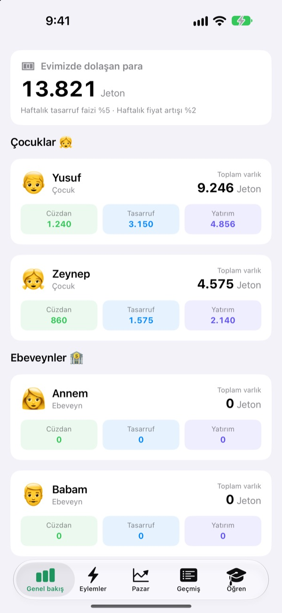
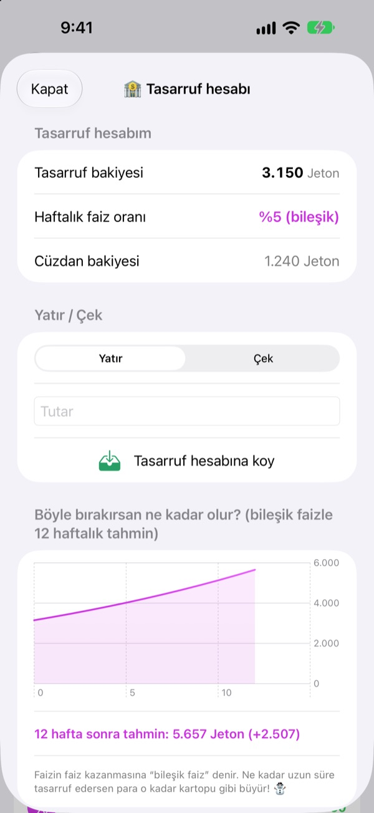
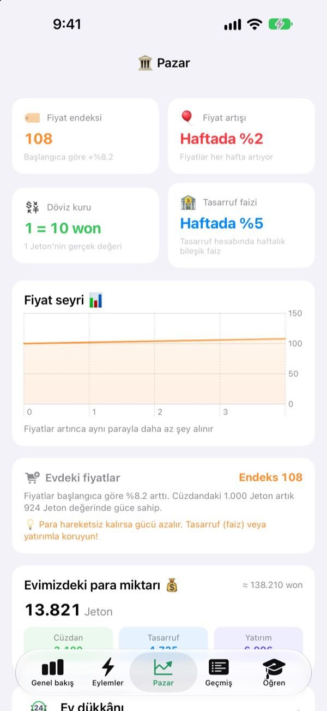
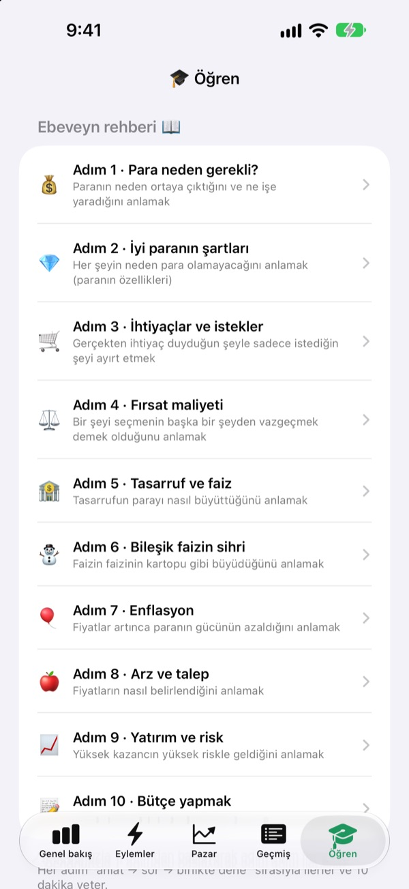

Harçlık günü
bir para dersine dönüşsün
Siz ailenin merkez bankasısınız, çocuklar da müşterileri. Harçlıklarını sizin kendi paranızla alıyor, atıştırmalık satın alıyor, birikimlerine faiz eklendiğini görüyor ve bir deneme fonunun inişlerini çıkışlarını yaşıyorlar.
Tüm özellikler ücretsiz. Gerçek para asla el değiştirmez.

1.000 jetonu nerede tutardınız?
Aynı 1.000 jeton bir cüzdanda, bir tasarruf hesabında ve üç fonda duruyor. Haftayı birer birer ilerletin ve her birine ne olduğunu izleyin. Hepsi uygulamadaki kurallarla aynı.
"Biriktirirsen büyür" sözü bir çocuğa gerçekten ulaşıyor mu?
Faiz, bileşik faiz, enflasyon: anlattıkça daha da uzak geliyor. SukSuk Harçlık'ta çocuklar kendileri kazanıyor, harcıyor ve bekliyor. Geçen haftaki birikimlerinin faiz getirdiğini fark ettikleri anda, bir sonraki harçlık doğrudan tasarruf hesabına gidiyor.
Sabrın karşılığını görün
Tasarruf hesabındaki para her hafta bileşik faiz kazanır. Oranı siz belirlersiniz; grafik de dokunulmazsa 12 hafta sonra ne kadar olacağını gösterir.
Birkaç gün uygulamayı açmadınız mı? Açıldığında birikmiş tüm haftalar tek seferde ödenir.

Fiyatların cüzdanı nasıl erittiğini görün
Pazar sekmesi ailenin fiyat endeksini, enflasyonu, faiz oranını, para miktarını ve fon fiyatlarını tek ekranda toplar. Fiyatlar yükseldikçe cüzdandaki 1.000 jetonun ne kadar daha az şey alabildiği görünür.
Çocuklar net rakamlarla görür: boşta duran para erir, biriktirilen ya da yatırılan para değerini korur.

Birlikte yapılacak on sohbet
Ebeveyn rehberi sizi on adımda götürür: paraya neden ihtiyacımız var, ihtiyaçlar ve istekler, fırsat maliyeti, tasarruf ve faiz, bileşik faiz, enflasyon, yatırım ve risk, en sonunda da bütçe yapmak.
Bileşik faiz hesaplayıcısı ve fiyat deneyi hesaplayıcısıyla sayıları değiştirip neler olduğunu birlikte görebilirsiniz.

Üç adımda başlayın
- 1
Paranıza bir ad verin
Fasulye, Yıldız, Jeton; aileniz ne derse o.
- 2
Ebeveyn PIN'i belirleyin
Dört haneli. Yalnızca bilen kişi harçlık verebilir ya da banka ayarlarını değiştirebilir.
- 3
Aileyi ekleyin
Çocukları ve ebeveynleri ekleyin, ilk harçlığı verin, hazırsınız.
Ne nerede
- Genel bakış
- Herkesin cüzdanı, tasarrufu ve yatırımları tek bakışta
- Eylemler
- Harçlık ver ya da düş, Ürün barkodu, Ürün ekle, Çocuğu davet et, Çocuk telefonu modu, Banka ayarları (ebeveyn PIN'i gerekir)
- Pazar
- Fiyat endeksi, enflasyon, döviz kuru, tasarruf faizi, para miktarı, fon fiyatları
- Geçmiş
- Her para hareketi tarihe, kişiye ya da türe göre
- Öğren
- On adımlık ebeveyn rehberi, bileşik faiz hesaplayıcısı, fiyat deneyi hesaplayıcısı
- 🐢 Kaplumbağa Güvenli Fon
- Günlük küçük dalgalanmalar, yavaş ve istikrarlı yükseliş
- 🐰 Tavşan Büyüme Hissesi
- İner çıkar ama büyür
- 🚀 Roket Macera Hissesi
- Uçabilir de, çakılabilir de
Başlangıçta haftalık %5 tasarruf faizi ve haftalık %2 enflasyon vardır. İkisini de Ebeveyn modunda, Banka ayarları altında değiştirebilirsiniz. Enflasyonu %0 yaparsanız fiyatlar sabit kalır.
Tüm özellikler ücretsiz
Ücretsiz
- Ailenizin kendi parası ve PIN ile kilitli Ebeveyn modu
- Harçlık verme ve düşme, Ev dükkânı ve barkodla ödeme
- Her hafta bileşik faiz kazanan tasarruf hesabı
- Getiri grafikleriyle üç deneme fonu
- Pazar sekmesi ve tarihli işlem geçmişi
- On adımlık ebeveyn rehberi ve iki hesaplayıcı
- Çocuk telefonu modu ve iCloud eşzamanlaması
Geliştiriciyi destekleyin
- Ebeveyn modunda Banka ayarları'ndan dilediğiniz tutarda küçük bir bahşiş gönderin
- Bahşiş hiçbir şeyin kilidini açmaz. Uygulama aynı şekilde çalışır
Reklam yok, abonelik yok. Bahşiş düğmesi yalnızca Ebeveyn modunun içinde olduğu için çocuklar hiçbir zaman satın alma düğmesi görmez.
Sorular
Gerçek para kullanılıyor mu?
Hayır. Uygulamadaki para ve tüm işlemler oyun amaçlıdır, yalnızca öğrenmek için. Hiçbir şey gerçek bir banka hesabına, karta ya da nakde bağlı değildir.
Çocuğumun telefonunda aynı hesapları nasıl görürüz?
Aynı iCloud hesabıyla oturum açılmış aygıtlar aile hesaplarını otomatik olarak eşzamanlar. Ayarlar > Apple Hesabı > iCloud bölümünde iCloud'un açık olduğunu kontrol edin. Eylemler sekmesindeki Çocuğu davet et bölümünden, çocuğunuzun kamerayla tarayacağı bir QR davetiyesi oluşturabilirsiniz. iCloud olmadan veriler yalnızca o aygıtta kalır.
Çocuk telefonu modu nedir?
Çocuğunuzun telefonunu yalnızca ona ait bir ekrana dönüştürür. Çocuk sadece kendi cüzdanını, yatırımlarını, geçmişini ve derslerini görür; moddan çıkmak için ebeveyn PIN'i gerekir.
Ebeveyn PIN'ini unuttum.
PIN yalnızca aygıtta saklanır, bu yüzden geliştirici bile onu kurtaramaz. Uygulamayı silip yeniden yüklerseniz kurulumu baştan yapabilirsiniz, ancak mevcut verileriniz de silinir.
Tasarruf faizi nasıl işliyor?
Her hafta tasarruf bakiyesine otomatik olarak bileşik faiz eklenir. Oranı Ebeveyn modunda belirlersiniz; geçen haftalar uygulama bir sonraki açılışta hesaplanır.
Fon fiyatları gerçek piyasaya bağlı mı?
Hayır. Fon fiyatları uygulamanın içinde günde bir kez değişen deneme verileridir. Fon ne kadar riskliyse dalgalanma o kadar büyük olur. Gerçek finansal ürünler değildir.
Fiyatlar neden artıyor?
Çocuklar enflasyonu hissetsin diye ailenin fiyat endeksi her hafta biraz yükselir. Hızı değiştirebilir ya da %0 yaparak kapatabilirsiniz; bunun için Ebeveyn modunda Banka ayarları'na gidin. Ev dükkânındaki atıştırmalık ve oyuncakların fiyatlarını da biraz artırırsanız ders daha kalıcı olur.
Her şeyi nasıl silerim?
Uygulamayı silmek aygıttaki verileri kaldırır. iCloud'a eşzamanlanmış veriler için Ayarlar > Apple Hesabı > iCloud > Saklama Alanını Yönet bölümüne gidip uygulamanın verilerini silin.
Ailemin bilgileri bir yere gönderiliyor mu?
Hayır. Kayıt yok; tüm veriler aygıtınızda ve kendi iCloud hesabınızda kalır. Geliştiriciye yalnızca Ebeveyn modundan kendi gönderdiğiniz geri bildirimler, anonim kullanım istatistikleri ve çökme raporları ulaşır.
Hangi aygıtlarda çalışır?
iOS 17.0 veya sonrası yüklü iPhone'da.
Sorunuz, hata bildiriminiz ya da fikriniz mi var? leeo@kakao.com adresine yazın. Aygıt modelinizi ve iOS sürümünüzü belirtirseniz size daha hızlı yardımcı olabiliriz.